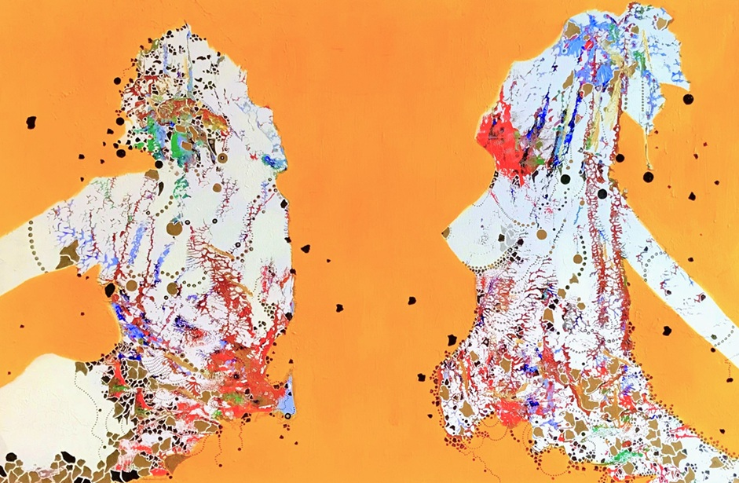
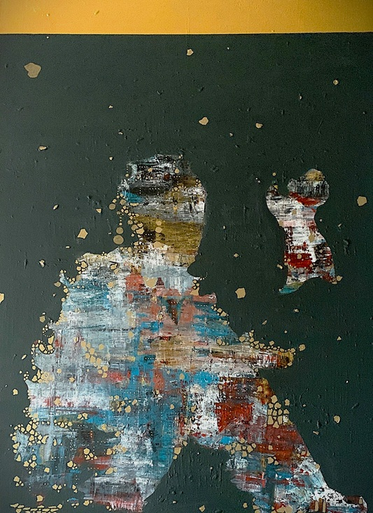
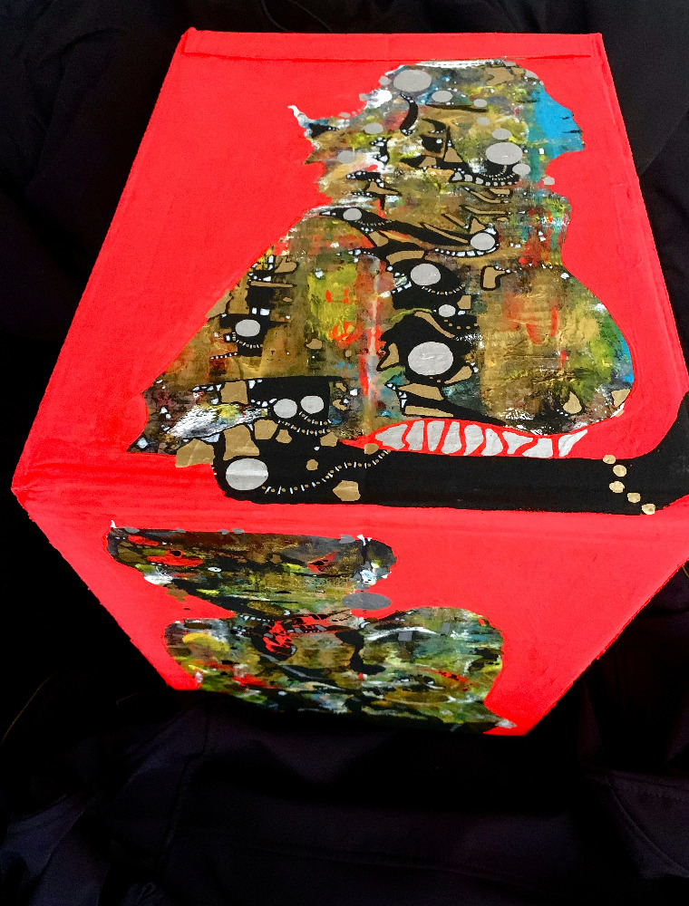
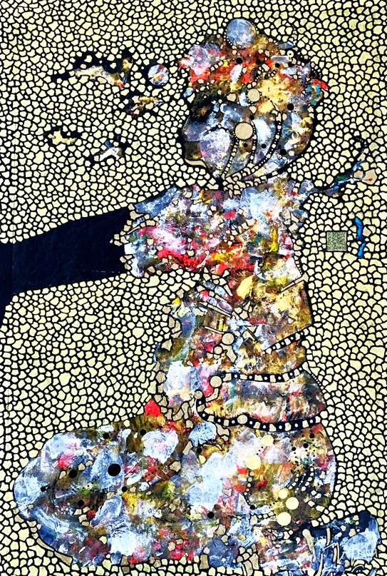
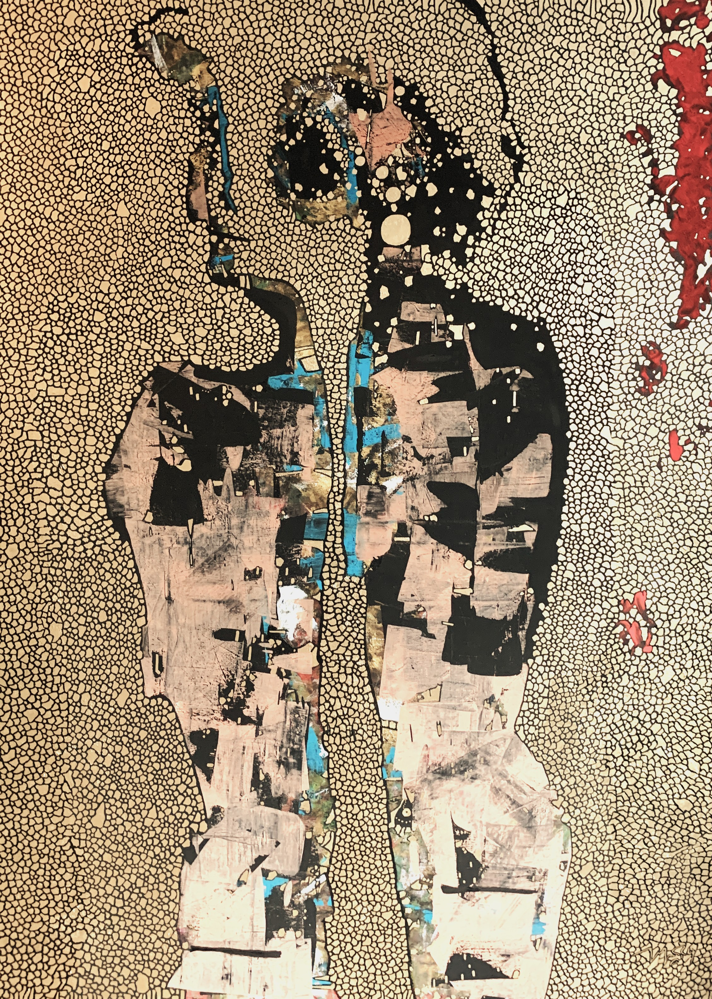

A practice defined by large-scale monochromatic works, raw human portraiture, and expansive conceptual series. Held across public state repositories, international museum collections, and private foundations, the studio maintains an active archive spanning public installations, solo monograph projects, and ongoing site-specific research across Europe, Asia, and Africa.
30+
Years Archival Trajectory
100+
Global Solo Retrospectives
1,000s
Global Participatory Records
4
Core Conceptual Series
Selected Series Catalogue

• Rooh-Nawaz • Persian Heritage
Rooh-Nawaz (روحنواز)
Medium: Mixed Media & Natural Earth Pigments on Canvas Academic Network: Harvard, Yale, Courtauld Institute, Samuel Jordan Center, Univ. of Göttingen, Masaryk Univ. Core Concept: A living fine art archive dedicated to Persian cultural preservation, transforming classical poetic fragments and collective memory into visual masterworks.

• Voices of the Land • Indigenous Knowledge
Voices of the Land
Collaborative Institutions: National Gallery of Canada, Burke Museum, Endangered Languages Project, Univ. of Victoria, Univ. of Alberta. Core Concept: Incorporates the Anishinaabemowin framework Ankosé ('everything is connected') to transform oral traditions into permanent fine art masterworks.

• Life of a Box • Ecological Sculpture
Monumental Packaging Sculpture
Medium: Recycled Industrial Packaging & Gold Leaf Patron Institutions: National Museum of Ukraine, National Museum of Denmark, Museum of Basel, Nobel Prize Museum, City Museum Nuremberg, Nuuk Art Museum, Mohatta Palace. Exhibition History: Exhibited across state museums and documented in official catalogues from the Museum of Paper in Duszniki-Zdrój, Poland.

• Words Project • Masterwork Archive
Bumblebee
Medium: Mixed Media on Canvas (Natural Ground Earth Pigments) Institutional Context: Presented as part of the prominent international showcase, Brussels Expo: Empowering Europe’s Creative Industries. Core Concept: Explores subtle structural rhythms and expressive form, highlighting dynamic creative dialogues within contemporary European artistic practice.
Featured Detail
• CANVAS STUDY • TEXTURE & FORM
Tactile Layering & Pigment Application
A focal section illustrating the interplay of texture, stroke, and surface composition.

CONVIVIALITY
Hesham Malik | 160 × 120 cm
Displayed within the former monastic refectory of Mariánská Týnice—a masterpiece designed by Jan Blažej Santini-Aichl—Conviviality mirrors the enduring themes of gathering and communal spirit that define this historic site. Positioned beneath 18th-century Baroque ceiling frescoes depicting Cistercian fellowship and sacred hospitality, the work’s expansive scale and layered surface establish a dialogue between contemporary expression and the architectural heritage.
Global Institutional History
• 30-YEAR EXHIBITION & ARCHIVAL RECORD • SELECT ANY NODE
Explore solo retrospectives, linguistic provenance partners, and ecological material patrons worldwide.

Harvard
USA East
USA West
USA Midwest
Vancouver
Calgary
Toronto
Ottawa
Montreal
Yukon
London
Oxford
Cambridge
Edinburgh
Riyadh
Zurich
Geneva
Bern
Bologna
Florence
Fabriano
Paris
Toulouse
Ljubljana
Koper
Zagreb
Yerevan
Minsk
Sofia
Riga
Madrid
Lisbon
Kyiv
Bratislava
Sereď
Senec
Volgograd
Tartu
Tallinn
Vaduz
Budapest
Vilnius
Helsinki
Oulu
Aalborg
Copenhagen
Linz
Vienna
Innsbruck
Prague
Pilsen
Brussels
Leuven
Ghent
Warsaw
Krakow
Duszniki
Poznań
Hamburg
Stuttgart
Frankfurt
Leipzig
Berlin
Göttingen
Mainz
Nuremberg
Amsterdam
Leiden
Utrecht
Stockholm
Athens
Kuwait City
Gaza
Jenin
Amman
Jerusalem
Muscat
Abu Dhabi
Dubai
Nicosia
Damascus
Bishkek
Peshawar
Goa
Bangkok
Quezon City
Changsha
Hanoi
Kuala Lumpur
Brisbane
Sydney
Melbourne
Canberra
Apia
Suva
Port-Vila
Auckland
Georgetown
Réduit
Buenos Aires
Lješevići
Bogotá
San José
Pretoria
Johannesburg
Nairobi
Lagos
West Africa
Gaborone
Antananarivo
Kinshasa
Nassau
Pan-Africa
Nuuk
Ilulissat
City / Region
Select any gold node to inspect institutional records...
• Photo Monograph Series • Kenya • 2008
Faces, Moments, and the Unfiltered Spirit of East Africa
Thirty candid portrait studies capturing the presence, nuance, and unfiltered human expression of youth through the lens of an artist.
Recorded in 2008, Chronicles of Mombasa is an intimate investigation into perception, ambition, and the unconditioned mind.
During a singular encounter with school children in East Africa, a deceptively simple inquiry—asking each child to define their future aspiration—revealed a remarkable psychological dynamic. When posed with the exact same question shortly thereafter, every child offered an entirely distinct response, unburdened by rigid self-definition or narrative continuity.
What began as a portrait study evolved into an observation of total cognitive freedom and fluid identity—qualities often lost in the adult experience.